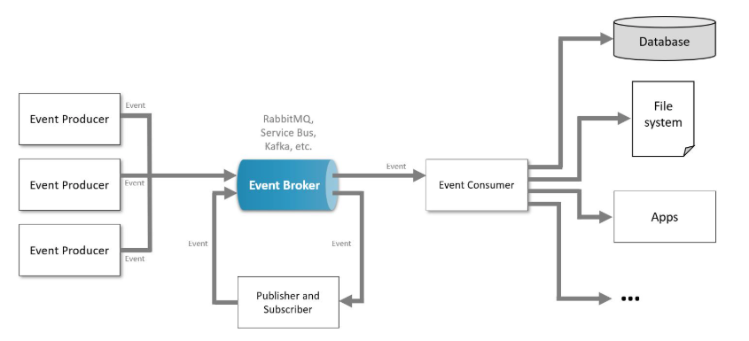

System Design Mastery
Master scalable systems with premium insights
⚡ Event-Driven Architecture
1️⃣ What is it?
Event-Driven Architecture is a design pattern where systems communicate by producing and reacting to events .
Instead of services calling each other directly , it publishes an event , and other services react to that event asynchronously.

💡 Simple
idea:
Service A → emits event → Event Broker → Service B / Service C react
Example event:
- OrderPlaced
- PaymentCompleted
- UserRegistered
Other services listen and perform actions automatically.
What is an Event?
An event is something that has happened in the system.
Examples:
- User signed up
- Payment completed
- Order placed
⚙️ Key Components
1️⃣ Event Producer
The producer generates an event when something happens.
Examples:
- Order service
- Payment service
- User signup service
Example:
User places order → Order Service emits "OrderPlaced"
{
"event": "order_created",
"order_id": 123
}2️⃣ Event Broker / Event Bus
The broker receives events and distributes them to consumers.
It acts like a middleman message system.
Common technologies:
- Kafka
- RabbitMQ
- AWS SNS/SQS
- Google Pub/Sub
Responsibilities:
- Store events
- Deliver events
- Manage queues or topics
3️⃣ Event Consumer
Consumers listen for events and react when they occur.
Examples:
- Email service
- Notification service
- Inventory service
- Analytics service
Example:
OrderPlaced
event
↓
Inventory
Service → reduce stock
Email Service → send confirmation email
Analytics Service →
update metrics
🔄 How Event-Driven Architecture Works
Example: E-commerce order system
User places an order
Order service creates event OrderPlaced
Event is sent to event broker (Kafka)
Multiple services consume the event
OrderPlaced
Event
↓
Inventory Service → update stock
Payment Service → process payment
Email
Service → send confirmation to user
Analytics Service → track order
Everything happens independently and asynchronously.
🏗️ Event-Driven Architecture Flow
Client
↓
Order Service (Producer)
↓
Event Broker (Kafka / RabbitMQ)
↓
Consumers
↓
Payment Service ( Payment Service processes payment )
Inventory Service ( Inventory Service updates stock )
Email Service ( Email Service sends confirmation )
Analytics Service ( Analytics Service records order )
🎯 Types of Event-Driven Patterns
1️⃣ Event Notification
The producer only notifies that something happened.
Example:
-> UserRegistered
-> Consumers
fetch required data separately.
2️⃣ Event Carried State Transfer
The event includes complete data needed by consumers.
Example: OrderPlaced
{
orderId: 101
userId: 45
amount: 200
}Consumers don't need to query other services.
3️⃣ Event Sourcing
Instead of storing final state, system stores all events that happened.
Example:
AccountCreated
MoneyDeposited
MoneyWithdrawn
Current
state = replaying events.
Used in:
-> banking
-> financial systems
✅ Advantages
1️⃣ Loose
Coupling
Services don’t directly depend on each other.
Producer doesn’t
know who consumes events.
2️⃣
High Scalability
Consumers can scale
independently.
Example:
--> 10
notification services
--> 5 analytics services
3️⃣
Asynchronous Processing
Events are processed without blocking the
main
system.
Faster response times.
4️⃣
Fault Tolerance
If a service fails, the event can be reprocessed
later.
⚠️ Disadvantages
1️⃣ System Complexity
Harder to design and debug.
2️⃣ Event Ordering Issues
Events may arrive out of order.
3️⃣ Data Consistency Challenges
Eventual consistency instead of strong consistency.
4️⃣ Monitoring Difficulty
Hard to trace flow across many services.
Requires:
--> distributed
tracing
--> logging
--> monitoring tools
🌍 Real-World Examples
🛒 E-commerce
Event: OrderPlaced
Consumers:
--> Inventory service
-->
Payment
service
--> Shipping service
--> Notification service
🚗 Ride-Sharing Apps
Event: RideRequested
Consumers:
--> Driver matching service
-->
Pricing
service
--> Notification service
📺 Streaming Platforms
Event: VideoWatched
Consumers:
--> Recommendation system
-->
Analytics
system
--> Advertisement system
How Event driven architecture differ with client server architecture :
1️⃣ Client–Server Architecture
Idea
A
client
sends a request to a server, and the server responds.
Communication is direct
and
synchronous.
Flow
Client → Server →
Response
Client waits for response.
Characteristics
--> Direct
communication
--> Request–response
model
--> Synchronous (client waits)
Example:
Order Service → Payment Service →
Email Service → Inventory Service
If one service fails → the entire chain
fails.
Services
directly call each other
2️⃣ Event-Driven Architecture
Idea
Services
communicate by sending events, not direct requests.
Services
do not call each other
directly.
Flow
Producer → Event →
Message
Broker → Consumers Consumer Services react independently.
Example: E-commerce order
User places
order
↓
OrderPlaced
event
↓
Event Broker
↓
Inventory Service updates stock
Payment Service
processes payment
Email Service sends confirmation
Analytics Service records order
Each service reacts independently.(Asynchronously) ( Means don’t wait for other response )
Example Event-Driven :
You subscribe to
YouTube.
Creator
uploads video → Event → Subscribers notified
Subscribers react when event occurs.
🎯 3-Line Interview Answer
Event-Driven
Architecture is a system design pattern where services communicate through
events instead of
direct calls.
Producers publish events to a message broker, and
consumers react
asynchronously.
It enables loose coupling, scalability, and real-time
processing in
distributed systems.
More scalable ( easy to scale in future improvements ) in event driven
Less scalable (
hard
to scale in future ) in client server architecture
Check out this link for differences between all architectures